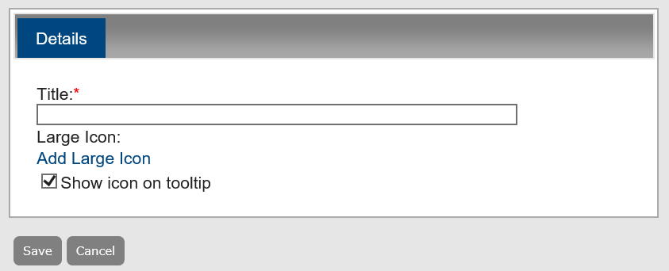
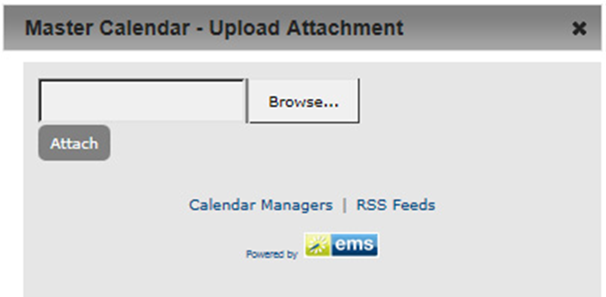
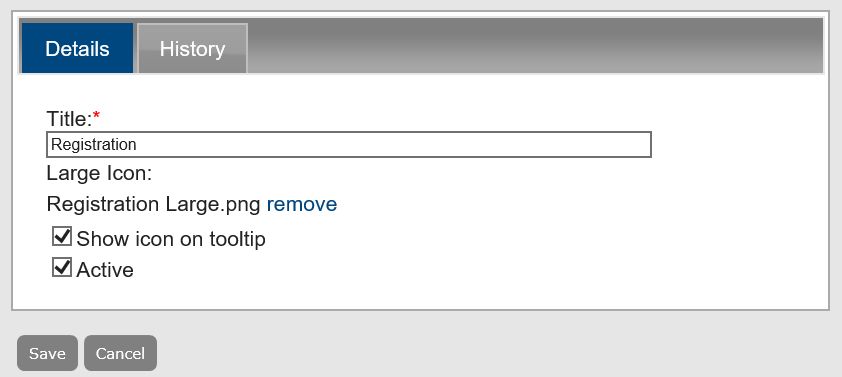

Configure Event Icons
An event icon is a graphic symbol (typically a simple picture) that further identifies an event. By default, when you associate an active event icon with an event, the icon is always displayed in the event description. You can also have the icon displayed in a tooltip and you can have the icon displayed on the calendar for the event. Managing event icons consists of adding event icons to event descriptions, tooltips or calendars, activating and inactivating event icons, editing event icons, and deleting event icons.
Add a New Event Icon
When you add an event icon, you must, at a minimum, add a large icon.
- From the Admin Panel, navigate to Admin > Configuration > Event Icons. The Event Icons page opens on the Active tab, listing all currently active event icons in Master Calendar.

- Under Actions, click Add. The Details dialog box opens, where you can upload and name the event icon, and control where it is used (event descriptions, tooltips, or calendars) to add the icons. By default, Show icon on tooltip is selected.

- In the Title field, enter a name to describe the event icon.
- Click Add Large Icon. The Upload Attachment dialog box opens, where you can Browse and select an image.

- After you select the image in the Choose File dialog box, click Open. The Choose File dialog box closes, and the Browse field in the Upload Attachment dialog box is automatically populated with the full directory path (including the file name) for the event icon.
A large icon is less than 25 x 25 pixels.
- In the Upload Attachment dialog box, click Attach. The Upload Attachment dialog box closes, and the Details tab is updated to reflect the addition of the large event icon. In addition, a “remove” option is displayed next to the name of the event icon. You can click this option to remove an icon if you added an icon in error, or if you want to replace the icon with another one.
- Optionally, do one or both of the following:
- If you do not want the icon to be displayed in the event tooltip, clear Show icon on tooltip.
- If you want to display the icon on the calendar entry, select Show icon on calendar.
- Click Save to save the event icon as an active icon in Master Calendar. The icon is displayed on the Active tab of the Event Icons page.
Edit Event Icons
When editing existing icons, you can simply change details about the icons, such as name or where it is used, you can change the image itself, or you activate or de-activate the icon, which controls whether it displays to users anywhere in Master Calendar.
- From the Admin Panel, navigate to Admin > Configuration > Event Icons. Select the Active or Inactive tab.
- Select the icon you want to edit.
- Under Actions, click Edit. The Details tab opens.

To view the history of an event icon, click the History tab.
- Edit the text in the Title field to rename the icon.
- Use the Remove and Add options to upload a different icon file.
- Select the Show icon on tooltip checkbox to control where the icon appears.
- Select the Active checkbox to control whether the icon displays to users anywhere in Master Calendar.
- Click Save.
To delete an icon entirely, from Step 2 above, choose Delete. To select all icons on a page, select Title in the list view first. Click OK (twice) to confirm your actions and the icon will no longer appear in the Active or Inactive tabs.